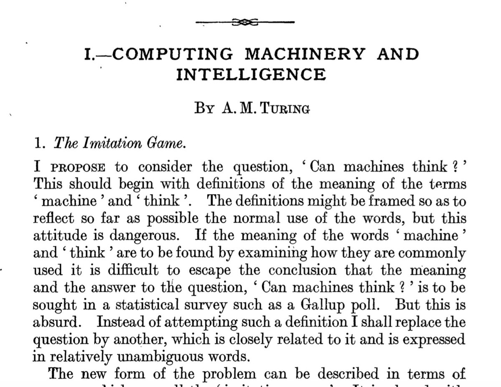

Um pouco de Ficção
O que são? O que fazem? Como fazem?
E este aqui? Qual é a diferença?
E este aqui? Alguém já viu?
O que este tem de diferente dos demais?
E estes?
Resumo
- Vamos sumarizar o que este exemplos da ficção científica são,
- o que eles fazem,
- como eles fazem e
- onde eles atuam?
Será que a ficção tem relação com a ciência?
1950 Turing's "Computing Machinery and Intelligence"
The Imitation Game: "Can machines think?"

1956 Dartmouth meeting "Artificial Intelligence" adopted
Objetivos da IA
Teórico: a criação de teorias e modelos para a capacidade cognitiva. Compreender o que é inteligência e como o raciocínio se processa.
\vspace{1cm}
Prático: \(\cdots\)
Um pouco de realidade
Atividade em grupo (⅓)
- Formem grupos de 5 estudantes.
- Cada grupo deve escolher um dos setores abaixo:
- Saúde
- Educação
- Segurança
- Financeiro
- Transportes
- E-commerce
- Agronegócio
- Cinema e Publicidade
Atividades em grupo (⅔)
-
Cada grupo deve fornecer 2 exemplos de aplicações que fazem uso de Inteligência Artificial e 2 exemplos de aplicações que não fazem uso de Inteligência Artificial considerando o setor escolhido.
-
Cada grupo deve justificar os exemplos escolhidos. Descrever o motivo de uma aplicação estar categoriza como aplicação de IA ou não.
-
Cada grupo deve criar um arquivo PPT com imagens das aplicações escolhidas, títulos para as aplicações escolhidas justificativa para os exemplos escolhidos e referências onde podem ser encontradas mais informações sobre as aplicações selecionadas.
Atividades em grupo (3/3)
-
Cada grupo deve enviar o arquivo para o email fabriciojb at insper dot edu dot br.
-
Na próxima aula cada grupo terá 10 minutos para apresentar o seu trabalho.
Para aqueles que já terminaram
- Pergunte para o ChatGPT:
- "What is General AI?"
-
"O que é um agente autônomo?"
-
Compare a resposta dada pelo ChatGPT com o conteúdo que está nos Verbetes da Wikipedia sobre:
- "artificial general intelligence"
-
"autonomous agent".
-
Por favor, faça isto em sala de aula ou até a próxima aula.